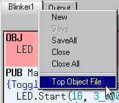
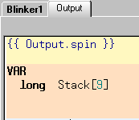

The object at the top of the Object View is always the “Top Object File” for that particular compilation. That means the compilation started from Blinker1, in this case. When we compile by using the F10 or F11 shortcut keys, or their corresponding menus, the Propeller Tool starts the compile operation using whatever edit tab is active at that moment. The active edit tab is the one that is highlighted differently than the rest.
If we had accidentally clicked on the Output object’s tab first and then compiled with F10 or F11 the compile would have started from that object instead. This would not have resulted in the application we desired and the Object View would have shown only one object, Output, in its structure. This is all because the compile functions we've been using are the “Compile Current” options; meaning they compile from the currently active object, or edit tab.
There are other compile functions that can help us. Select the Run menu and look at the options. You should see a “Compile Current” and “Compile Top” flyout menu.


Compile Current Menu (top) and Compile Top Menu (bottom)
Each menu, Compile Current and Compile Top, has the same sub-options but they start their compilation from different places. Compile Current starts from the active edit tab and Compile Top starts from the designated Top Object File.
You can tell the Propeller Tool which object to treat as the “designated Top Object File” at any time. You do this by any one of the following methods:
We used option #1 to select Blinker1 as the Top Object File, in the figure below. Note that afterwards, the Blinker1 tab’s text is bold. The file the Propeller Tool knows as the Top Object File always appears in bold.
Now, if we use one of the Compile Top options, such as Ctrl+F10 or Ctrl+F11, regardless of which edit tab is active, the Propeller Tool will compile starting from the Top Object File. For example, in the figure below, the Output object is the active edit tab. If we press Ctrl+F10, the application will be compiled starting with the Blinker1 object, however. If we had pressed F10 instead, the Output object would have been compiled.
Each of the Shortcut Keys for the Compile Current options, F8, F9, F10, etc., has a similar variation for the Compile Top options, Ctrl+F8, Ctrl+F9, Ctrl+10, etc.

Step 1: Right-click the desired edit tab, and choose Top Object File.

Step 2: The Top Object File’s name will show in bold on its Edit Tab.
If there’s ever a question of which object files were compiled in the last successful compile operation, use the mouse to explore the resulting application’s structure in the Object View.
It’s important to keep track of which file you've designated as the Top Object File and what compile option you chose; Current vs. Top. Only one file can be designated as the Top Object File at a time and the Propeller Tool remembers that file even between sessions.
Also, keep in mind that an object doesn't really need to be open in the Propeller Tool just to be compiled. If an object you compiled references another object, that object will be compiled whether or not it is currently open. Even the Top Object File can be compiled without it being open. For example, pressing Ctrl+F10 will compile the last designated Top Object File regardless of whether or not it even belongs to the current application you are working on.
Propeller Help Version 1.2
Copyright © Parallax Inc., dba Parallax Semiconductor
6/17/2011